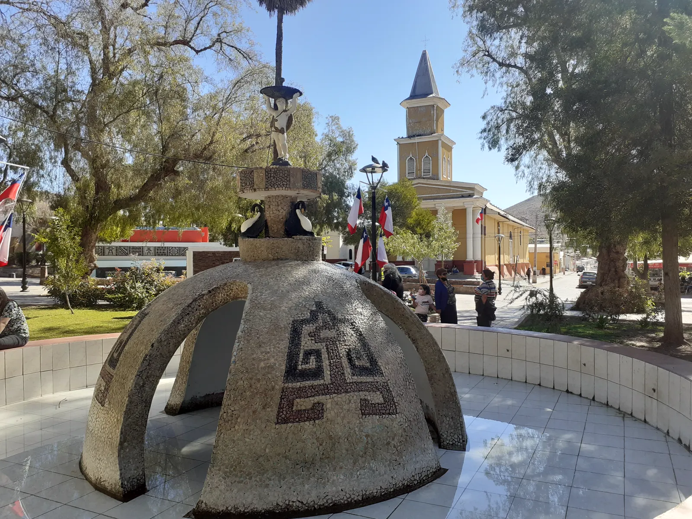
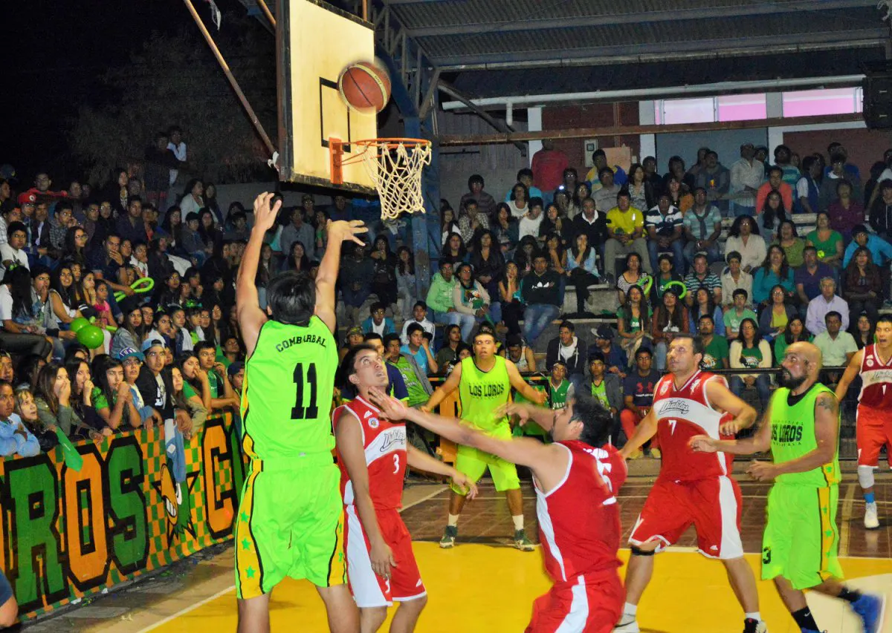
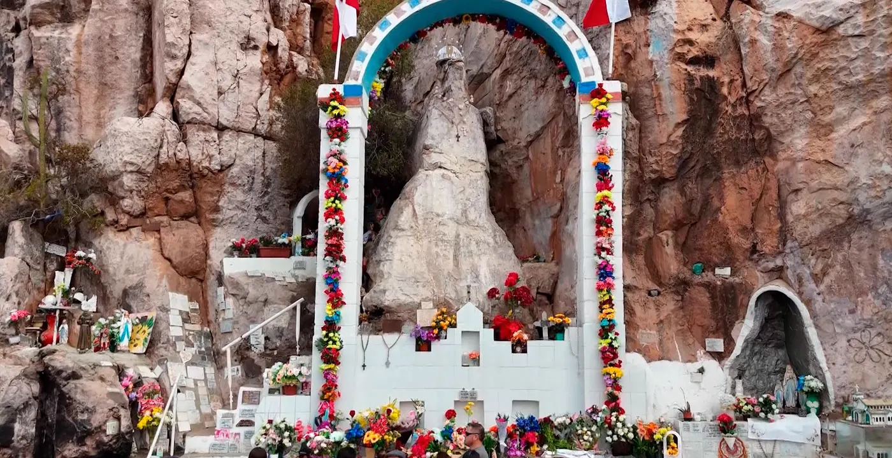

Conoce la comunaProvincia de Limarí · Región de Coquimbo
Combarbalá, tesoro bajo las estrellas
Ciudad y comuna de clima semidesértico rodeada de cerros, reconocida por su artesanía en combarbalita, sus cielos despejados y el Observatorio Astronómico Cruz del Sur.

Plaza de Armas e iglesia de Combarbalá.
1789Fundación de la villa
5.000años de poblamiento
3,5 kmde la plaza al observatorio
1993Combarbalita, piedra nacional
Origen del nombre
El origen del nombre Combarbalá no tiene una única explicación. Entre las hipótesis más citadas se encuentran una raíz quechua, Cumparpayay, y otra vinculada a la voz Cocambalá.
“Agua lejana con patos”
Una de las interpretaciones del nombre en mapudungun, asociada a la zona pantanosa cercana conocida como Posa de los Patos.
Primeros habitantes y fundación
El territorio fue habitado hace unos 5.000 años por pueblos molles y diaguitas, comunidades dedicadas principalmente a la ganadería y la alfarería, que los conquistadores encontraron en el siglo XVI. Durante el siglo XVII la zona fue poblada por españoles y mestizos.
En 1757 se creó el curato de Combarbalá y el 30 de noviembre de 1789 el capitán Juan Ignacio Flores fundó la ciudad con el nombre de Villa San Francisco de Borja de Combarbalá.
Hitos de la comuna
Un recorrido por los momentos que marcaron la historia de Combarbalá.
Hace 5.000 añosPueblos molles y diaguitas habitan el territorio.
1757Se crea el curato de Combarbalá.
1789Fundación de la Villa San Francisco de Borja de Combarbalá.
1936Se descubre la roca de la Virgen de la Piedra en La Isla.
1940Se construye el embalse Cogotí.
1993La combarbalita es declarada piedra nacional.
2005Se financia el Observatorio Cruz del Sur.
Lugares para visitar
Del cielo más limpio a las huellas de los primeros habitantes de la comuna.
AstroturismoCerro El Peralito
Observatorio Astronómico Cruz del Sur
Sus cuatro cúpulas están dispuestas como la constelación de la Cruz del Sur. Se ubica en el cerro El Peralito, a 3,5 km de la plaza, y nació como iniciativa de la Municipalidad junto al Planetario de la Universidad de Santiago, con el objetivo de difundir la astronomía.
4 cúpulas
3,5 km desde la plaza
$246 millones aportados por el Consejo Regional de Coquimbo (2005)
La combarbalita es una piedra ornamental semipreciosa que solo se encuentra en esta zona. En 1993 fue declarada piedra nacional de Chile, reemplazando al lapislázuli.
Las y los artesanos locales la trabajan en las formas más diversas: desde trapiches de lavaderos de oro hasta réplicas de iglesias del país, convirtiéndola en el sello de identidad de la comuna.
En Rincón de las Chilcas, dentro de Cogotí, se encuentra la mayor cantidad de vestigios precolombinos grabados en roca de la comuna, uno de los sitios mejor conservados de la región, con huellas de los pueblos molle y diaguita.
También hay petroglifos en Ramadilla, en el sector de Pama y en otros puntos del territorio.
Con capacidad para 150 millones de m³, sus aguas recorren más de 30 km hasta Ovalle y riegan sectores de Los Llanos de Cogotí y Punitaqui.
Es además un espacio de recreación para quienes buscan disfrutar del agua y del aire libre.
Nado
Camping
Windsurf
Tradiciones y fiestas
Celebraciones que año tras año mantienen viva la identidad combarbalina.

Deporte y culturaFebrero
El Clásico
Cada febrero los clubes “Los Loros” y “Unión Juvenil” compiten por ser el mejor de la ciudad con actividades deportivas y culturales, en una disputa que se define con un encuentro final de básquetbol.

Fiesta religiosaPrimer domingo de mayo
Fiesta de la Virgen de la Piedra
En La Isla, a 22 km de Combarbalá, se venera una roca con forma de mujer descubierta en 1936. La celebración reúne procesiones, desfiles, mandas y grupos de baile.
¿Planificas tu visita?
Comunícate con la Municipalidad para recibir orientación sobre actividades y atractivos de la comuna.